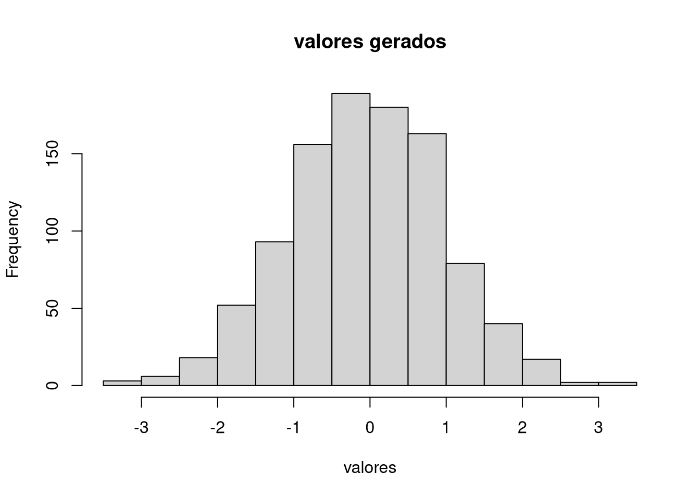

4 Noções de Probabilidade
4.1 Amostragem
O comando sample() tem a função de obter amostras de alguma estrutura de dados que for de interesse. Para isso, é necessário informar:
- Os dados
- Tamanho da Amostra
- Se será uma amostra com ou sem reposição
- As probabilidades de cada elemento (Padrão = 1/2)
Exemplos:
valores <- 1:10 #dados
letras <- letters
# amostra de 5 elementos com reposição
sample(x = valores, size = 5, replace = T)## [1] 4 9 8 6 4# amostra de 7 elementos sem reposição
sample(x = letras, size = 7, replace = F)## [1] "h" "c" "d" "t" "l" "q" "j"4.2 Análise Combinatória
4.2.1 Permutação
A permutação de n elementos distinos pode ser calculada no R através da função factorial().
Exemplo:
factorial(10)## [1] 36288004.2.2 Arranjo
Um Arranjo considera a posição dos elementos além de suas combinações, diferente da combinação, que considera somente os elementos, e não a ordem deles.
Não há uma função pronta no R base para isso, mas é possível implementá-la através da seguinte função:
arranjo <- function(n, x){
return(factorial(n) / factorial(n-x))
}Exemplo:
# calculando Arr(5,3)
arranjo(5,3)## [1] 604.2.3 Combinação
Para fazer a combinação, utiliza-se a função choose().
Exemplo:
# calculando comb(5,3)
choose(5,3)## [1] 104.3 Distribuições de Probabilidade
Ao trabalhar com variáveis aleatórias, geralmente são associadas distribuições de probabilidade a essas variáveis. E, tendo conhecimento dessas distribuições, é possível obter informações dos dados, a partir da estatística.
No R básico estão implementadas as seguintes distribuições:
- Beta
- Binomial
- Cauchy
- Chi-quadrado
- Exponencial
- F
- Gamma
- Geométrica
- Hipergeométrica
- Log-Normal
- Multinomial
- Binomial Negativa
- Normal
- Poisson
- T de Student
- Uniforme
- Weibull
4.3.1 Geração de valores aleatórios
Para se gerar valores aleatórios que venham de alguma distribuição de probabilidade utiliza-se o prefixo “r” juntamente com a abreviação da distribuição, da seguinte forma:
r"disribuição"(n,...)
Para essa função, é necessário informar:
- n: quantidade de valores aleatórios gerados
- …: os parâmetros da distribuição
Exemplos:
# gerando 10 valores aleatórios baseados em uma normal padrão
rnorm(n = 10, mean = 0, sd = 1)## [1] 1.3974267 1.7636530 0.4856014 -0.2657389 0.1516114 1.3766098
## [7] -0.1803943 -1.5676751 -0.2607259 0.9618104# gerando 1000 valores aleaórios para uma normal com media = 100 e desvio padrão = 5
valores <- rnorm(n = 1000, mean = 0, sd = 1)
# criando um histograma para os dados acima
hist(valores, main = "valores gerados")
4.3.2 Função de Densidade / Probabilidade
A função para gerar as probabilidades da função densidade de uma distribuição é semelhante a função anterior, porém, utiliza-se o prefixo “d”:
d"disribuição"(x,...)
Para essa função, é necessário informar:
- x: o quantil associado a probabilidade de interesse
- …: os parâmetros da distribuição
Exemplo:
# achando P(X = 2) para X ~ Bin(n = 4, p = 0.7)
dbinom(x = 2, size = 4, prob = 0.7)## [1] 0.26464.3.3 Função Acumulada
De forma análoga, a probabilidade da função acumulada de determinada distribuição é calculada ao utilizar o prefixo “p”:
p"disribuição"(q,...)
Para essa função, é necessário informar:
- q: o quantil associado a probabilidade de interesse
- …: os parâmetros da distribuição
Exemplo:
# achando a probabilidade acumulada para o exemplo anterior
pbinom(q = 2, size = 4, prob = 0.7)## [1] 0.34834.4 Quantis
Para o cálculo dos quartis de determinada distribuição, usa-se o prefixo “q”:
q"disribuição"(p,...)
Para essa função, é necessário informar:
- p: a probabilidade associada ao quantil de interesse
- …: os parâmetros da distribuição
Exemplo:
# Calculando y tal que P(X<y) = 0.5 para a distribuição usada anteriormente
qbinom(p = 0.5, size = 4, prob = 0.7)## [1] 3